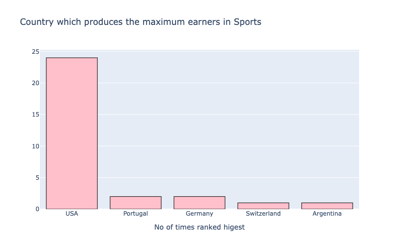

Última actualización: 2022-04-21
En el siguiente hacklab, vamos a utilizar un dataset previamente recolectado por la comunidad y haremos un análisis extractivo de datos, para posteriormente aplicar varias técnicas de aprendizaje automático para la predicción de precios. El ejercicio concluye con un reto de diseño de pipelines de datos con Apache Airflow y creación del diseño de redes neuronales para la resolución del problema de predicción de precios.
En este hacklab, vamos a desarrollar un script en Python con la ayuda de Google Colaboratory para analizar los datos y luego usamos Plotly y Matplotlib para obtener mejores perspectivas de visualización de los datos y así obtener mejores aprendizajes sobre el dataset.
Este codelab está enfocado en Análisis de datos con Python y la aplicación de algunas técnicas de estadística aplicada, los conceptos que no sean relevantes se pasan por alto y se proporcionan para que simplemente se copie y pegue el código.
El código fuente de este ejercicio se ha tomado desde Kaggle, sin embargo una copia local está guardada en nuestra carpeta oficial en Google Drive. Puedes descargar el repositorio y el dataset usando el siguiente botón:
Lo primero que haremos antes de manipular el dataset, es declarar las dependencias de nuestro proyecto de la siguiente manera:
import pandas as pd
import numpy as np
import matplotlib.pyplot as plt
import seaborn as sns
from scipy.stats import norm
from scipy import stats
from sklearn import preprocessing
from sklearn.preprocessing import LabelEncoder
from sklearn.preprocessing import StandardScaler
from sklearn.model_selection import train_test_split
from sklearn.model_selection import KFold
from sklearn.model_selection import GridSearchCV
from sklearn.ensemble import ExtraTreesClassifier
from sklearn.linear_model import LinearRegression
from sklearn.preprocessing import PolynomialFeatures
from sklearn.linear_model import Ridge
from sklearn.linear_model import Lasso
from sklearn.linear_model import ElasticNet
from sklearn import metrics
from sklearn.metrics import mean_squared_error
from sklearn.metrics import mean_absolute_error
from math import sqrt
from sklearn.metrics import r2_scoreUna vez que hemos importado y configurado dependencias como Matplotlib o Seaborn, es momento de leer el dataset usando Pandas de la siguiente manera:
data=pd.read_csv('AB_NYC_2019.csv')
Luego vamos a ejecutar el método head para identificar las primeras 5 observaciones del dataset, en particular habrá que poner atención en los tipos de datos que contiene nuestro dataset:
data.head()
La instrucción, data.head() nos imprime la siguiente información:
También podemos aplicar estadística descriptiva utilizando el método describe(), y como parámetros del método iloc para mostrar una matriz informacional, le pasamos dos slices.
data.iloc[:,3:].describe()
Esto nos arroja un análisis de los valores numéricos que contiene el dataset de la siguiente manera:
Por último, vamos a comprender la dimensionalidad del dataset utilizando el comando shape
data.shape
Ahora vamos a buscar valores nulos en el dataset que contiene 48895 observaciones, con 16 diferentes columnas.
Una manera muy simple de verificar valores nulos, es a través de ejecutar dos métodos en cadena, primero preguntando por valores nulos, y luego haciendo una sumatoria de esos valores.
data.isnull().sum()
La gráfica que nos arroja Plotly se puede ver de la siguiente manera:
Podemos usar una de las características de configuración de Pandas, el método background_gradient para imprimir el resultado de una consulta en nuestro dataset como se puede ver en la siguiente pieza de código:
# Top Paid Athlete for Each Year
Top_paid_each_year = df1[df1['Current Rank'] == 1].sort_values(by='year',ascending=False)
z = Top_paid_each_year[['Name','Sport','Nationality','earnings ($ million)']]
z.style.background_gradient(cmap='Reds')
Pandas nos permite visualizar esta instrucción así:
counts_top = Top_paid_each_year['Name'].value_counts().to_frame()
trace = go.Bar(
y = counts_top.index,
x = counts_top['Name'] ,
orientation='h',
marker = dict(color='pink',
line=dict(color='black',width=1)),
)
data = [trace]
layout = go.Layout(barmode = "group",title='Athlete earning the most,maximum number of times',width=800, height=500,
xaxis= dict(title='No of times ranked higest'),
yaxis=dict(autorange="reversed"),
showlegend=False)
fig = go.Figure(data = data, layout = layout)
iplot(fig)
Y su correspondiente gráfica, utilizando los superpoderes de Plotly:
Podemos producir gráficas más sofisticadas utilizando las siguientes piezas de código:
# Top Paid Athlete for Each Year
total_earnings = Top_paid_each_year.groupby('Name')['earnings ($ million)'].sum().to_frame().reset_index()
top_ranks = Top_paid_each_year['Name'].value_counts().to_frame().reset_index()
top_ranks.rename(columns={'index':'Name',
'Name':'Rank_counts'}, inplace=True)
df_compare = total_earnings.merge(top_ranks, on='Name')
#source: https://www.kaggle.com/kanncaa1/plotly-tutorial-for-beginners#Bar-Charts
import plotly.graph_objs as go
from plotly import tools
trace0 = go.Bar(
y=df_compare['Name'],
x=df_compare['Rank_counts'],
marker=dict(color='rgba(171, 50, 96, 0.6)',line=dict(color='rgba(171, 50, 96, 1.0)',width=1)),
name='Top Ranks',
orientation='h',
)
trace1 = go.Scatter(
y=df_compare['Name'],
x=df_compare['earnings ($ million)'],
mode='lines+markers',
line=dict(color='rgb(63, 72, 204)'),
name='income',
)
layout = dict(
title='Income and Top Ranks',
yaxis=dict(showticklabels=True,domain=[0, 0.85]),
yaxis2=dict(showline=True,showticklabels=False,linecolor='rgba(102, 102, 102, 0.8)',linewidth=2,domain=[0, 0.85]),
xaxis=dict(zeroline=False,showline=False,showticklabels=True,showgrid=True,domain=[0, 0.42]),
xaxis2=dict(zeroline=False,showline=False,showticklabels=False,showgrid=True,domain=[0.47, 1],side='top',dtick=25),
legend=dict(x=0.029,y=1.038,font=dict(size=10) ),
margin=dict(l=200, r=20,t=70,b=70),
paper_bgcolor='rgb(248, 248, 255)',
plot_bgcolor='rgb(248, 248, 255)',
)
annotations = []
y_s = df_compare['Rank_counts']
y_nw = np.rint(df_compare['earnings ($ million)'])
# Adding labels
for ydn, yd, xd in zip(y_nw, y_s, df_compare['Name']):
# labeling the scatter savings
annotations.append(dict(xref='x2', yref='y2', y=xd, x=ydn-1,text='{:,}'.format(ydn),font=dict(family='Arial', size=12,color='rgb(63, 72, 204)'),showarrow=False))
# labeling the bar net worth
annotations.append(dict(xref='x1', yref='y1', y=xd, x=yd+1,text=str(yd),font=dict(family='Arial', size=12,color='rgb(171, 50, 96)'),showarrow=False))
layout['annotations'] = annotations
# Creating two subplots
fig = tools.make_subplots(rows=1, cols=2, specs=[[{}, {}]], shared_xaxes=True,
shared_yaxes=False, vertical_spacing=0.001)
fig.append_trace(trace0, 1, 1)
fig.append_trace(trace1, 1, 2)
fig['layout'].update(layout)
fig.show()
Produciendo las siguientes figuras:
counts_top = Top_paid_each_year['Nationality'].value_counts().to_frame()
trace = go.Bar(
x = counts_top.index,
y = counts_top['Nationality'] ,
orientation='v',
marker = dict(color='pink',
line=dict(color='black',width=1)),
)
data = [trace]
layout = go.Layout(barmode = "group",title='Country which produces the maximum earners in Sports',width=800, height=500,
xaxis= dict(title='No of times ranked higest'),
#yaxis=dict(autorange="reversed"),
showlegend=False)
fig = go.Figure(data = data, layout = layout)
iplot(fig)

trace = go.Scatter(
x = Top_paid_each_year.index,
y = Top_paid_each_year['earnings ($ million)'] ,
orientation='v',
marker = dict(color='red',
line=dict(color='royalblue',width=2)),
)
data = [trace]
layout = go.Layout(title='How much did the Top Paid Athlete for Each Year, earn? ',width=800, height=500,
xaxis= dict(title='Years'),
yaxis=dict(title="Earning in US Dollars(million)"),
showlegend=False)
fig = go.Figure(data = data, layout = layout)
iplot(fig)
df['Sport'] = df['Sport'].str.upper() # Converting the text to uppercase
max_sport = df['Sport'].value_counts().to_frame()
trace = go.Bar(
y = max_sport.index,
x = max_sport['Sport'] ,
orientation='h',
marker = dict(color='pink',
line=dict(color='black',width=1)),
)
data = [trace]
layout = go.Layout(barmode = "group",title='Sport which dominates in earnings',width=800, height=500,
xaxis= dict(title='No of times ranked highest'),
yaxis=dict(autorange="reversed"),
showlegend=False)
fig = go.Figure(data = data, layout = layout)
iplot(fig)
max_sport = df['Nationality'].value_counts().to_frame()
trace = go.Bar(
y = max_sport.index,
x = max_sport['Nationality'] ,
orientation='h',
marker = dict(color='pink',
line=dict(color='black',width=1)),
)
data = [trace]
layout = go.Layout(barmode = "group",title='Country which dominates in Sports earningss',width=800, height=500,
xaxis= dict(title='No of times ranked highest'),
yaxis=dict(autorange="reversed"),
showlegend=False)
fig = go.Figure(data = data, layout = layout)
iplot(fig)
s = df['Name'].value_counts().to_frame()[:5]
s.style.background_gradient(cmap='Reds')
Monica Seles es la única mujer que ha aparecido en la lista de los deportistas 10 mejores pagados hasta ahora, y lo hizo en 1992.
# People who have appeared once on the list.
names = df['Name'].value_counts().to_frame()
names[names['Name']==1].index
# On scanning the list, we find the name of a sole women athlete- monica seles
monica = df[df['Name'] == 'Monica Seles']
monica.style.set_properties(**{'background-color': 'pink',
'color': 'black',
'border-color': 'black'})
top_earners_alltime = pd.pivot_table(df, index='Name',values="earnings ($ million)", aggfunc='sum')
top3_earners_all = top_earners_alltime.sort_values(by="earnings ($ million)",ascending=False)[:3]
top3_earners_all.style.background_gradient(cmap='Reds')
Vamos a crear un método para únicamente pasarle parámetros y hacer más eficiente la escritura y lectura del código, acá vemos la definición del método earnings_plot.
def earnings_plot(dataframe,athlete,image_path,opacity):
"""
function that creates a plotly line chart with image of the athlete in the background
"""
athlete_df = df1[df1['Name'] == athlete]
trace = go.Scatter(
x = athlete_df.index,
y = athlete_df['earnings ($ million)'] ,
orientation='v',
marker = dict(color='red',
line=dict(color='red',width=6)),
)
data = [trace]
layout= go.Layout(title= f'{athlete}' +"'s earnings over the Years",
xaxis=dict(title='Year'),
yaxis=dict(title="Earnings in US$ (millions)"),
images= [dict(
source=Image.open(image_path),
xref= "paper",
yref= "paper",
x= 0.5,
y= 0.5,
sizex= 1,
sizey= 1,
sizing= "stretch",
opacity= opacity,
xanchor= "center",
yanchor="middle",
layer= "below")])
fig = go.Figure(data = data, layout = layout)
iplot(fig)
image_path = "/kaggle/input/profile-pics/tiger_woods.jpeg"
earnings_plot(df1,'Tiger Woods',image_path,opacity=0.3)
image_path = "/kaggle/input/profile-pics/Floyd.jpeg"
earnings_plot(df1,'Floyd Mayweather',image_path,opacity=0.2)
image_path = "/kaggle/input/profile-pics/LeBron.jpeg"
earnings_plot(df1,'LeBron James',image_path,opacity=0.2)
A continuación se describen algunos entregables incrementales y de diversos niveles de experiencia que puedes desarrollar para nutrir tu portafolio:
El flujo de trabajo y de datos para crear 1 o 2 pipelines de Apache Airflow.
El diseño de la arquitectura de redes neuronales y los argumentos corroborables a través de evidencia detrás del mismo.
¡Felicitaciones! Has exitosamente construido tu primer análisis de datos utilizando Python.
Aprendiste algunas técnicas estadísticas para colapsar, filtrar y agrupar distintas propiedades del dataset para responder preguntas relevantes, aprendimos a utilizar Matplotlib y Plotly.
Ahora conoces los pasos más significativos para analizar cualquier dataset que se te ponga en frente.
Puedes ver algunos otros recursos que hemos encontrado para ti acá: